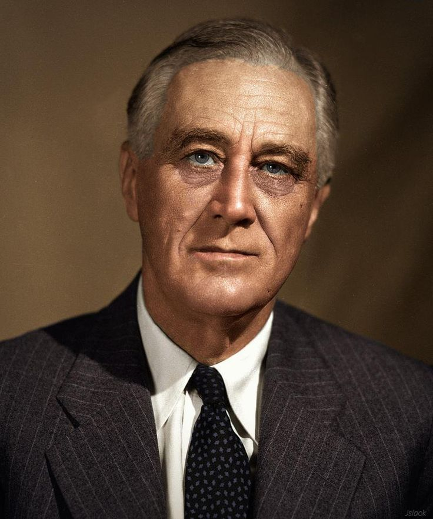

SumberFRANKLIN D. ROOSEVELT (FDR) adalah Presiden Amerika Serikat ke-32 (1933-1945), yang menjabat selama empat periode, lebih lama dari presiden mana pun dalam sejarah AS. Ia memimpin AS melalui Great Depression dan Perang Dunia II, serta memperkenalkan New Deal untuk pemulihan ekonomi.
Nama Lengkap: Franklin Delano Roosevelt Lahir: 30 Januari 1882, Hyde Park, New York, AS Meninggal: 12 April 1945, Warm Springs, Georgia, AS Jabatan: Presiden AS ke-32 (1933-1945) Partai: Demokrat
Roosevelt berasal dari keluarga kaya dan berpengaruh di New York. Ia belajar di Harvard University dan kemudian di Columbia Law School. Ia adalah sepupu jauh dari Theodore Roosevelt, Presiden AS ke-26.
1910: Terpilih sebagai senator negara bagian New York. 1913–1920: Menjabat sebagai Wakil Menteri Angkatan Laut AS di bawah Presiden Woodrow Wilson. 1921: Terserang polio, yang membuatnya lumpuh dari pinggang ke bawah, tetapi tetap aktif dalam politik. 1929–1933: Gubernur New York, menerapkan kebijakan ekonomi progresif.
1. Menghadapi Great Depression (Krisis Ekonomi 1929) Roosevelt memperkenalkan New Deal, serangkaian program ekonomi untuk mengatasi pengangguran dan kemiskinan. Program utama: Social Security Act (jaminan sosial) Civilian Conservation Corps (CCC) (pekerjaan untuk pemuda) Works Progress Administration (WPA) (proyek infrastruktur besar) 2. Peran dalam Perang Dunia II (1939–1945) Awalnya berusaha menjaga netralitas AS, tetapi membantu Sekutu melalui Lend-Lease Act (bantuan senjata ke Inggris dan Uni Soviet). Setelah Serangan Pearl Harbor (7 Desember 1941) oleh Jepang, AS masuk perang melawan Poros (Jerman, Italia, Jepang). Roosevelt bekerja sama dengan Winston Churchill (Inggris) dan Joseph Stalin (Uni Soviet) dalam strategi perang. 3. Kebijakan Domestik dan Sosial Mengawasi industrialisasi besar-besaran AS untuk mendukung upaya perang. Memberikan hak lebih besar kepada pekerja dan kelompok minoritas. AKHIR HIDUP DAN WARISAN Roosevelt terpilih untuk masa jabatan keempat pada 1944, tetapi kesehatannya memburuk. Meninggal pada 12 April 1945, hanya beberapa bulan sebelum Perang Dunia II berakhir. Wakilnya, Harry S. Truman, menggantikannya dan memimpin AS hingga akhir perang.
✅ Dampak Positif: Mengakhiri Great Depression dengan New Deal. Memimpin AS menuju kemenangan dalam Perang Dunia II. Mendirikan PBB (Perserikatan Bangsa-Bangsa) untuk menjaga perdamaian dunia. ❌ Dampak Negatif: Menginternir lebih dari 100.000 warga Jepang-Amerika selama Perang Dunia II karena alasan keamanan. Beberapa program New Deal dikritik sebagai terlalu intervensionis dalam ekonomi. Roosevelt tetap dianggap sebagai salah satu presiden terbesar dalam sejarah AS karena perannya dalam memimpin negara melalui krisis besar.